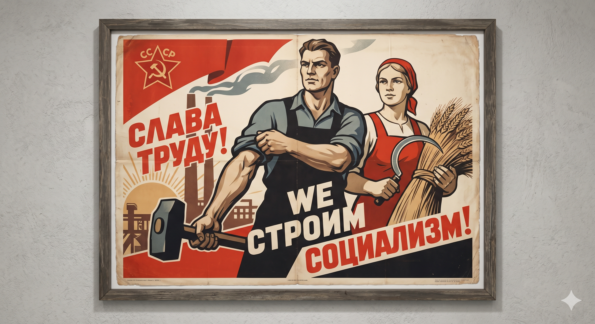

Образ героя
Советское кино создавало канонический образ героя: это всегда человек труда, готовый к самопожертвованию ради коллектива. Индивидуальные интересы всегда подчинялись государственным. Через экран транслировались нормы поведения, которые становились эталоном для миллионов.

Миф о будущем
Оптимизм
Обязательный «хэппи-энд» как символ неизбежной победы коммунизма.
Единство
Демонстрация дружбы народов и нерушимой связи власти и народа.
Враг
Четкое разделение на «своих» и «чужих» (шпионы, кулаки, империалисты).
Сакрализация истории
Идеологическая работа в кино достигала пика в фильмах о войне и революции. Эти события преподносились как священные акты рождения государства. Кино фиксировало официальную версию истории, превращая ее в религиозный по масштабу культ, не подлежащий сомнению.